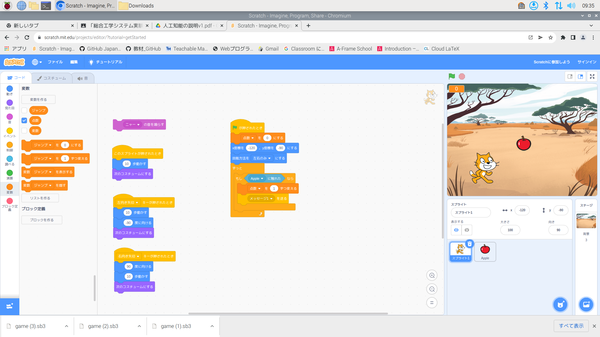

1週目のレポート ： 公大高専１年実習I-1
2組8番 daiseikou
第1週目
1-1 サイエンスアート
1.内容
スクラッチを使って線を書くプログラムを書いた。
2.感想
Scratchで絵を書くのは初めてだった、楽しかった。
自分の思ったような線を１回で書くのが難しかった。
奇麗なカーブや直線を書くのにとても適しているなと思った。
1-2 ゲーム

1.内容
Scratchを使って猫がりんごを取ると点数が入るゲームを作った。
りんごをランダムで落とす、音を鳴らす、ジャンプさせる、などをした。
2.感想
スムーズに進めることができた。面白かった。
資料を見ずにゲームを作るとなるとしたいことをするのは難しいと思った。
あまりスクラッチはやったことがなかったので新鮮だった。
1-3 ホームページ作成
私のホームページ
1.内容
ホームページを作った。
2.感想
中学の時にもホームページを作ったがそれよりも型ができてたので割と簡単だった。
ホームページは将来会社などで作ることもあるだろうし、作れて絶対損はないと思うのでもっといろいろ勉強したいと思った